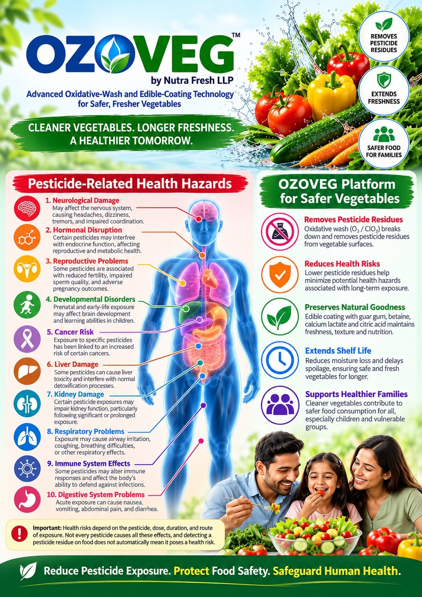

Lower one avoidable source of chemical intake
OZOVEG is a tool for reducing dietary pesticide exposure — while keeping vegetables fresh and appealing enough that people eat more of them.
Pesticides are designed to be biologically active
That activity does not always stop at the target pest. Toxicological and epidemiological research has linked exposure to certain pesticides with a wide range of effects on the human body.
The sound public-health principle is precaution: where exposure can be lowered cheaply and without loss of nutrition, it should be. Children, pregnant women and the elderly are the groups for whom this principle matters most.

Health effects linked to pesticide exposure
Effects reported in the scientific literature for certain pesticides, depending on the compound, dose, duration and route of exposure.
Neurological effects
Some pesticides may affect the nervous system, causing headaches, dizziness, tremor or impaired coordination.
Hormonal disruption
Certain pesticides may interfere with endocrine signalling, affecting reproductive and metabolic health.
Reproductive problems
Some pesticides have been associated with reduced fertility and adverse pregnancy outcomes.
Developmental effects
Exposure before birth or in early childhood may affect brain development and learning.
Cancer risk (specific compounds)
For some specific compounds, long-term exposure has been associated with a higher risk of certain cancers, including lymphoma and leukaemia.
Liver stress
Some pesticides can stress the liver and interfere with normal detoxification.
Kidney effects
Certain exposures may impair kidney function, particularly after significant or prolonged exposure.
Respiratory irritation
Exposure may irritate the airways, causing coughing or breathing difficulty.
Immune system changes
Some pesticides may alter immune responses and the body’s ability to defend against infection.
Digestive upset
Acute exposure can cause nausea, vomiting, abdominal pain and diarrhoea.
Health benefits of cleaner, fresher vegetables
Lower residue exposure
The oxidative wash breaks down and removes surface pesticide residues that a tap-water rinse leaves behind.
Cleaner surfaces
The same wash reduces spoilage and pathogenic microbes on the vegetable surface.
Nutrition preserved
The edible coating maintains natural taste, texture and nutrition — with no synthetic preservatives.
Confidence for families
Parents can serve salads and lightly cooked vegetables to children with greater confidence.
More vegetables eaten
Vegetables that stay crisp longer at home are more likely to be eaten than thrown away — supporting healthier diets.
Protecting vulnerable groups
Precaution matters most for children, pregnant women and the elderly.

A food-safety step, not a medicine
OZOVEG is positioned as a tool for reducing dietary pesticide exposure, not as a medical product. It does not treat or prevent any disease.
Its value lies in lowering one avoidable source of chemical intake while keeping vegetables appealing enough that people eat more of them — which supports every public-health message about a healthy diet.
Reduce pesticide exposure. Protect food safety.
Talk to us about bringing OZOVEG-treated vegetables to your customers.